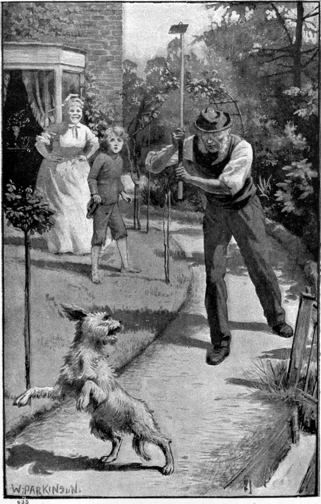

From the fact that his hostess made him no answer when he breathed the hope of a job in her garden, Clare concluded that he had presumed in suggesting the thing to her, and that she would be relieved by their departure. When he woke in the morning, therefore, early after a grand sleep, he felt he had no right to linger: he had been invited to sleep, and he had slept! He also shrank from the idea of being supposed to expect his breakfast before he went. So, as soon as he got up, he walked out of the gate, crossed the road, and sat down on the spot he had occupied the night before, there to wait until the house should be astir. For, although he could not linger within gates where he was unknown, neither could he slink away without morning-thanks for the gift of a warm night.
As he sat, he grew drowsy, and leaning back, fell fast asleep.
The thoughts of his hostess had been running on very different lines, and she woke with feelings concerning the pauper very different from those the pauper imagined in her. She must do something for him; she must give or get him work! As to giving him work, her difficulty lay in the gardener. She resolved, however, to attempt over-coming it.
She rose earlier than usual, therefore, and as the man, who did not sleep in the house, was not yet come, she went down to the gate to meet him and have the thing over—so eager was she, and so nervous in prospect of such an interview with her dreaded servant.
“Good gracious!” she murmured aloud, “does it rain beggars?” For there, on the same spot, lay another beggar, another boy, with a dog in his bosom the facsimile of the ugly white thing named after Milton’s angel! She did not feel moved to go and make his acquaintance. It could not be another of the family, could it? that had already heard of his brother’s good luck, and come to see whether there might not be a picking for him too! She turned away hurriedly lest he should wake, and went back to the house.
But looking behind her as she mounted the steps, she caught sight of the gardener at the other gate, casting a displeased look across the road before he entered: he did not like to see tramps about! Her heart sank a little, but she was not to be turned aside.
The gardener came in, and his mistress joined him and walked with him to his work, telling him as much as she thought fit concerning the boy, and interspersing her narrative with hints of the duty of giving every one a chance. She took care not to mention that he had come out of a prison somewhere.
“No one should be driven to despair,” she said, little thinking she used almost the very words of the Lord, according to the Sinaitic reading of a passage in St. Luke’s gospel.
The argument had little force with the rough Scotchman: his mistress was soft-hearted! He shook his head ominously at the idea of giving a tramp the chance of doing decent work, but at last consented, with a show of being over-persuaded to an imprudent action, to let the boy help him for a day, and see how he got on, stipulating, however, that he should not be supposed to have pledged himself to anything.
Miss Tempest’s plans went beyond the gardener’s scope. She had for some months been inclined to have a boy to help in the house—an inclination justified by a late unexpected accession of income: if this boy were what he seemed, he would make a more than valuable servant; and nothing could clear her judgment of him better, she thought, than putting him to the test of a brief subjection to the cross-grained, exacting Scotchman. By that she would soon know whether to dismiss him, or venture with him farther!
She had but just wrung his hard consent from the gardener, when the cook came running, to say the boy was gone. Upon poor Miss Tempest’s heart fell a cold avalanche.
“But we’ve counted the spoons, ma’am, and they’re all right!” said the cook.
This additional statement, however, did not seem to give much consolation to the benevolent old lady. She stood for a moment with her eyes on the ground, too pained to move or speak. Then she started, and ran to the gate. The cook ran after, thinking her mistress gone out of her mind—and was sure of it when she saw her open the gate, and run straight down the bank to the road. But when she reached the gate herself, she saw her standing over a boy asleep on the grass of the opposite bank.
Abdiel, lying on his bosom, watched her with keen friendly eyes. Clare was dreaming some agreeable morning-dream; for a smile of such pleasure as could haunt only an innocent face, nickered on it like a sunny ripple on the still water of a pool.
“No!” said Miss Tempest to herself; “there’s no duplicity there! Otherwise, a tree is not known by its fruit!”
Clare opened his eyes, and started lightly to his feet, strong and refreshed.
“Good morning, ma’am!” he said, pulling off his cap.
“Good morning—what am I to call you?” she returned.
“Clare, if you please, ma’am.”
“What is your Christian name?”
“That is my Christian name, ma’am—Clare.”
“Then what is your surname?”
“I am called Porson, ma’am, but I have another name. Mr. Porson adopted me.”
“What is your other name?”
“I don’t know, ma’am. I am going to know one day, I think; but the day is not come yet.”
He told her all he could about his adoptive parents, and little Maly; but the time before he went to the farm was growing strangely dreamlike, as if it had sunk a long way down in the dark waters of the past—all up to the hour when Maly was carried away by the long black aunt.
The story accounted to Miss Tempest both for his good speech and the name of his dog. The adopted child of a clergyman might well be acquainted with Paradise Lost, though she herself had never read more of it than the apostrophe to Light in the beginning of the third book! That she had learned at school without understanding phrase or sentence of it; while Clare never left passage alone until he understood it, or, failing that, had invented a meaning for it.
“Well, then, Clare, I’ve been talking to my gardener about you,” said Miss Tempest. “He will give you a job.”
“God bless you, ma’am! I’m ready!” cried Clare, stretching out his arms, as if to get them to the proper length for work. “Where shall I find him?”
“You must have breakfast first.”
She led the way to the kitchen.
The cook, a middle-aged woman, looked at the dog, and her face puckered all over with points of interrogation and exclamation.
“Please, cook, will you give this young man some breakfast? He wanted to go to work without any, but that wouldn’t do—would it, cook?” said her mistress.
“I hope the dog won’t be running in and out of my kitchen all day, ma’am!”
“No fear of that, cook!” said Clare; “he never leaves me.”
“Then I don’t think—I’m afraid,” she began, and stopped. “—But that’s none of my business,” she added. “John will look after his own—and more!”
Miss Tempest said nothing, but she almost trembled; for John, she knew, had a perfect hatred of dogs. Nor could anyone wonder, for, gate open or gate shut, in they came and ran over his beds. She dared not interfere! He and Clare must settle the question of Abdiel or no Abdiel between them! She left the kitchen.
The cook threw the dog a crust of bread, and Abdiel, after a look at his master, fell upon it with his white, hungry little teeth. Then she proceeded to make a cup of coffee for Clare, casting an occasional glance of pity at his garments, so miserably worn and rent, and his brown bare feet.
“How on the face of this blessed world, boy, do you expect to work in the garden without shoes?” she said at length.
“Most things I can do well enough without them,” answered Clare; “—even digging, if the ground is not very hard. My feet used to be soft, but now the soles of them are like leather.—They’ve grown their own shoes,” he added, with a smile, and looked straight in her eyes.
The smile and the look went far to win her heart, as they had won that of her mistress: she felt them true, and wondered how such a fair-spoken, sweet-faced boy could be on the tramp. She poured him out a huge cup of coffee, fried him a piece of bacon, and cut him as much bread and butter as he could dispose of. He had not often eaten anything but dry bread, in general very dry, since he left the menagerie, and now felt feasted like an emperor. Pleased with the master, the cook fed the dog with equal liberality; and then, curious to witness their reception by John, between whom and herself was continuous feud, she conducted Clare to the gardener. From a distance he saw them coming. With look irate fixed upon the dog, he started to meet them. Clare knew too well the meaning of that look, and saw in him Satan regarding Abdiel with eye of fire, and the words on his lips—
“And fly, ere evil intercept thy flight.”
The moment he came near enough, without word, or show of malice beyond what lay in his eye, he made, with the sharp hoe he carried, a sudden downstroke at the faithful angel, thinking to serve him as Gabriel served Moloch. But Abdiel was too quick for him: he had read danger in his very gait the moment he saw him move, and enmity in his eyes when he came nearer. He kept therefore his own eyes on the hoe, and never moved until the moment of attack. Then he darted aside. The weapon therefore came down on the hard gravel, jarring the arm of his treacherous enemy. With a muttered curse John followed him and made another attempt, which Abdiel in like manner eluded. John followed and followed; Abdiel fled and fled—never farther than a few yards, seeming almost to entice the man’s pursuit, sometimes pirouetting on his hind legs to escape the blows which the gardener, growing more and more furious with failure, went on aiming at him. Fruitlessly did Clare assure him that neither would the dog do any harm, nor allow any one to hit him. It was from very weariness that at last he desisted, and wiping his forehead with his shirt-sleeve, turned upon Clare in the smothered wrath that knows itself ridiculous. For all the time the cook stood by, shaking with delighted laughter at his every fresh discomfiture.

“Awa’, ye deil’s buckie,” he cried, “an tak’ the little Sawtan wi’ ye! Dinna lat me see yer face again.”
“But the lady told me you would give me a job!” said Clare.
“I didna tell her I wad gie yer tyke a job! I wad though, gien he wad lat me!”
“He’s given you a stiff one!” said the cook, and laughed again.
The gardener took no notice of her remark.
“Awa’ wi’ ye!” he cried again, yet more wrathfully, “—or—”
He raised his hand.
Clare looked in his eyes and did not budge.
“For shame, John!” expostulated the cook. “Would you strike a child?”
“I’m no child, cook!” said Clare. “He can’t hurt me much. I’ve had a good breakfast!”
“Lat ‘im tak’ awa’ that deevil o’ a tyke o’ his, as I tauld him,” thundered the gardener, “or I’ll mak’ a pulp o’ ’im!”
“I’ve had such a breakfast, sir, as I’m bound to give a whole day’s work in return for,” said Clare, looking up at the angry man; “and I won’t stir till I’ve done it. Stolen food on my stomach would turn me sick!”
“Gien it did, it wadna be the first time, I reckon!” said the gardener.
“It would be the first time!” returned Clare. “You are very rude.—If Abdiel understood Scotch, he would bite you,” he added, as the dog, hearing his master speak angrily, came up, ears erect, and took his place at his side, ready for combat.
“Ye’ll hae to tak’ some ither mode o’ payin’ the debt!” said John. “Stick spaud in yird here, ye sall not! You or I maun flit first!”
With that he walked slowly away, shouldering his hoe.
“Come, Abdiel,” said Clare; “we must go and tell Miss Tempest! Perhaps she’ll find something else for us to do. If she can’t, she’ll forgive us our breakfast, and we’ll be off on the tramp again. I thought we were going to have a day’s rest—I mean work; that’s the rest we want! But this man is an enemy to the poor.”
The gardener half turned, as if he would speak, but changed his mind and went his way.
“Never mind John!” said the cook, loud enough for John to hear. “He’s an old curmudgeon as can’t sleep o’ nights for quarrellin’ inside him. I’ll go to mis’ess, and you go and sit down in the kitchen till I come to you.”